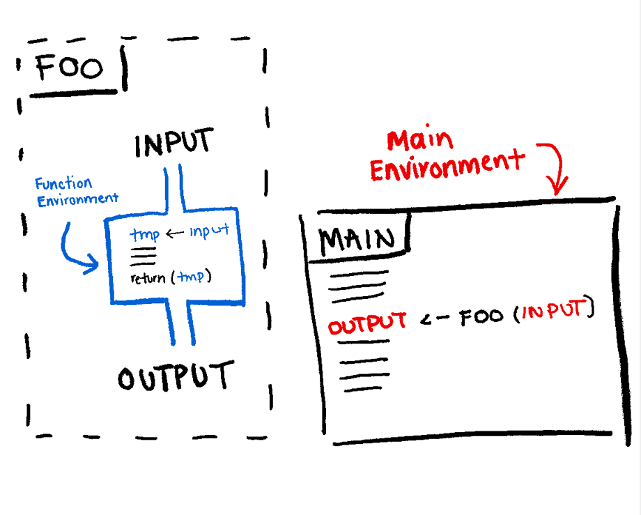

4 Control Structures & Functions
4.1 Learning Objectives
Understand If statements
Understand for & while loops
Create new functions & Install Packages
4.2 Conditional Statements
We can tell our code to perform certain tasks if a certain condition is met.
x <- 5
#If the number is greater than 5, get its square
if (x > 5){
x^2
} else{
#If not, multiply it by 2
x*2
}## [1] 10# Can incorporate multiple conditions
x <- 7
if (x > 5 && x < 10){
#If x is greater than 5 AND is less than 10
x^2
} else if ( x < 0 || x > 10){
#If x is less than 0 OR greater than 10
-x
} else {
x * 2
}## [1] 494.3 For & While Loops
For loops let you iterate over the elements of a vector
## [1] 1
## [1] 2
## [1] 3
## [1] 4
## [1] 5
## [1] 6
## [1] 7
## [1] 8
## [1] 9
## [1] 10## [1] "a"
## [1] "ab"
## [1] "cab"
## [1] "taxi"While loops let you iterate over a piece of code until a condition is no longer met.
## [1] 5
## [1] 4
## [1] 3
## [1] 2
## [1] 14.4 Functions
Sometimes, we need to repeatedly use a sequence of code. Creating functions helps reduce the amount of clutter in our code.

#Example Function that calculates mean
new_mean <- function(values){
print(values)
#return()
sum(values)/length(values)
}
x <- 1:5
mean(x) == new_mean(x)## [1] 1 2 3 4 5## [1] TRUE4.5 Installing packages
There are multiple sources and ways to do this.
CRAN
BioConductor
For more details about the project you can visit https://www.bioconductor.org
To install packages from BioConductor you first need to install BioConductor itself.
if (!require("BiocManager", quietly = TRUE))
install.packages("BiocManager")
BiocManager::install(version = "3.16")Then you can install any package you want by using the install
GitHub
If you want to install the development version of a package, or you are installing something that is only available on GitHub you can use devtools
4.6 Detour || Seeking help
The ? operator in R allows you to get more information about different functions and objects. This will open up the ‘help’ pane in the bottom right of RStudio which will show the documentation for the function/object. This is a great way to get more information.
Concatenate function
Print the description of an object
## 'data.frame': 150 obs. of 5 variables:
## $ Sepal.Length: num 5.1 4.9 4.7 4.6 5 5.4 4.6 5 4.4 4.9 ...
## $ Sepal.Width : num 3.5 3 3.2 3.1 3.6 3.9 3.4 3.4 2.9 3.1 ...
## $ Petal.Length: num 1.4 1.4 1.3 1.5 1.4 1.7 1.4 1.5 1.4 1.5 ...
## $ Petal.Width : num 0.2 0.2 0.2 0.2 0.2 0.4 0.3 0.2 0.2 0.1 ...
## $ Species : Factor w/ 3 levels "setosa","versicolor",..: 1 1 1 1 1 1 1 1 1 1 ...